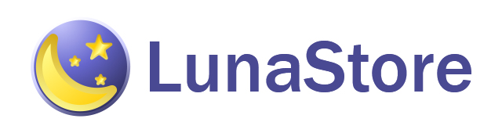

Последнее обновление: 01.02.2026
Что это такое?
LunaStore - своего рода альтернативный "магазин" приложений и игр. На данный момент целимся на эпоху Windows XP.
Также "магазин" может служить справочником для поиска информации о последней версии ПО под ту или иную ОС
Почему "магазин" написано в кавычках?
Мы являемся фанатским сайтом и не думаем, что такое прям вырастет до чего-то огромного. Тем более он сделан на основе браузера PaleMoon.
Всмысле "на основе браузера PaleMoon"?
Не поверишь. Мы скачали последнюю сборку PaleMoon и сделали типо "магазин".
Когда планируется запуск?
По сути он уже запущен :)
"Хмм, а это всё легально?"
Пока не можем представить, какие могут быть претензии к сайту информационного формата.